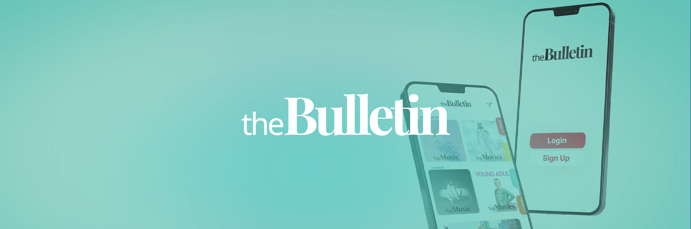
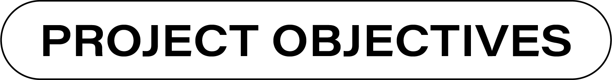
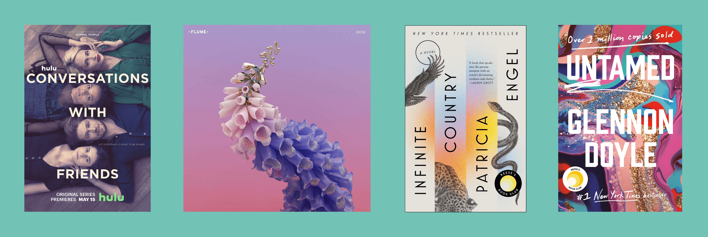
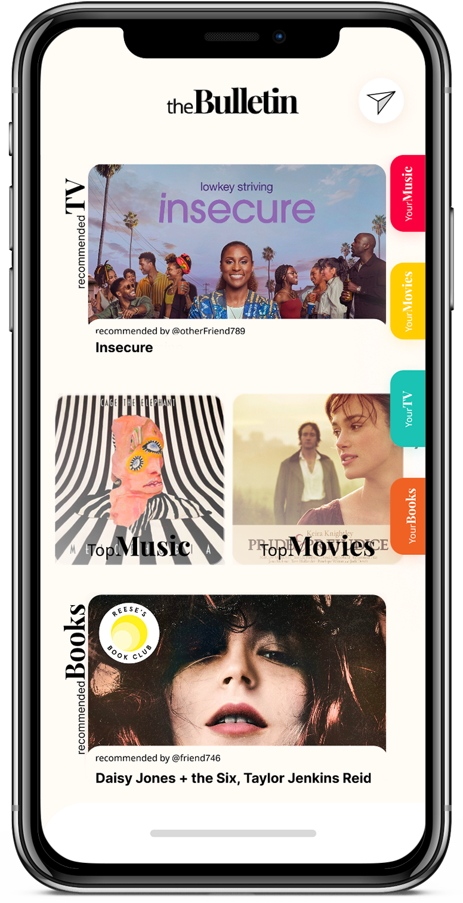
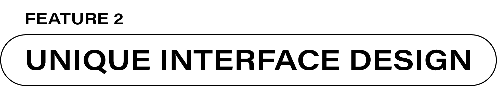
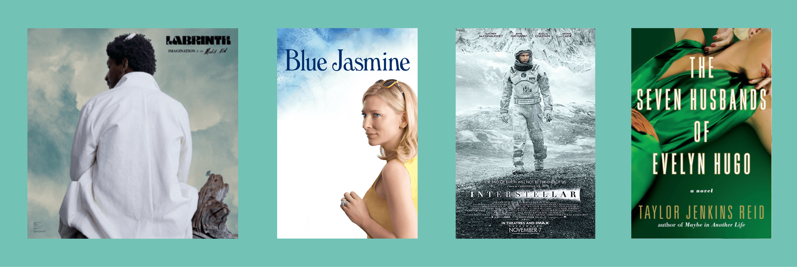

UI/UX Designer

Create an app to solve an ongoing situation, such as the pandemic.
Create a unique interface design.
Create a social media platform that connects people beneficial to mental health.

During the pandemic, we had all the time in the world and nowhere to go. So we started watching more TV and reading more books —which was one the best ways people stayed connected. theBulletin nurtures its users' connection to one another. It is like a digital book club that encompasses additional types of content.
TV + books account for massive markets, worth $250 bn and $103 bn, respectively (Business Tech)
Social media platforms can provide “empathy” and “support” which can enrich their users' lives (WeForum.org)
“Being socially connected to others can ease stress, anxiety, and depression” (HelpGuide.org)
During the pandemic, it was easy to consume popular media that everyone else was consuming. However, the time came that it was hard to find engaging content that provided enough of an escape from reality. This app helps people find an escape while maintaining connections to friends and family. By recommending content to one another, the users' relationships can thrive on common experience while tuning out the crazy world around them.
You can explore this feature by watching the .gif to the right of this text.


This prototype's design process rested upon imagining new ways to interact with a phone screen. Users interact with this social media feed through horizontal and vertical scrolling. The latter lets users glance through other users' most recent content consumption. Meanwhile, the horizontal scroll function gleans more insight by listing all the most recent content their friends have interacted with and enjoyed. Through the variation in user interactinos, this app constructs a hierarchy of interaction design, with vertical scroll belonging to the most general information and horizontal scroll representing more in-depth information.
You can explore this feature by watching the .gif to the left of this text.
Social media apps benefit users when they foster connections between people. This prototype facilitates does through its instant messaging feature. Users can also recommend content they enjoyed to friends on the app. In the pandemic, remaining connected to friends and familiy was difficult —because of physical distancing and lack of conversation topics. While this prototype offers a virtual experience, it allows friends to connect with one another and share recommendations just like in-person!
You can explore this feature by watching the .gif to the right of this text.
